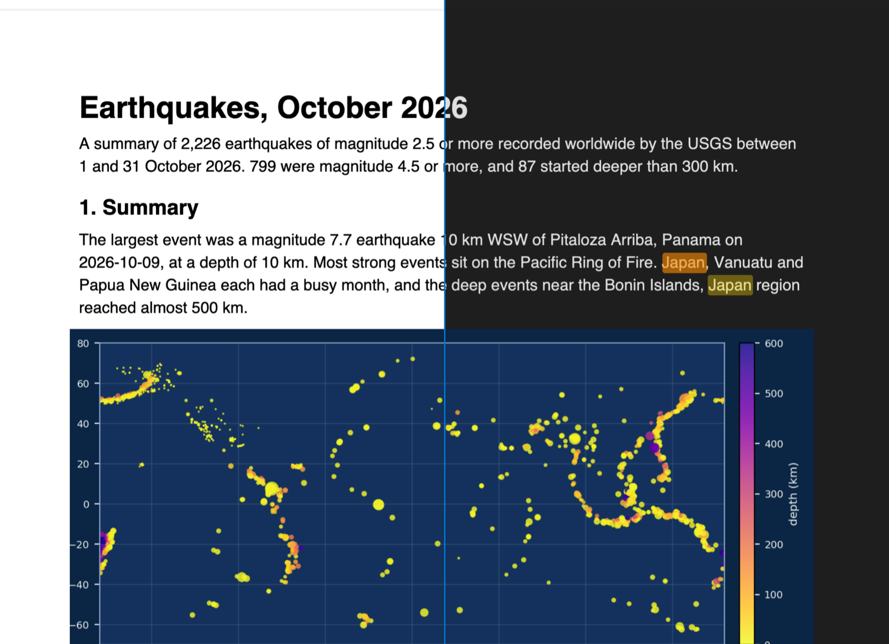

Guide in italiano · PDF Reader
Leggere i PDF in modalità scura in VS Code
La maggior parte delle modalità scure per PDF inverte tutta la pagina, e il cielo azzurro di una foto diventa arancione. L'estensione gratuita PDF Reader inverte la pagina e poi ridipinge i pixel originali di ogni immagine: testo e sfondo diventano scuri, le foto mantengono i loro colori. Le pagine seguono il tema di VS Code, e il pulsante della luna cambia quando vuoi. Tutto offline, senza telemetria.
Gratuita, licenza MIT. ID zovo.pdf-viewer-dark, versione 0.3.7. Richiede VS Code 1.90.0 o successivo.
Questa guida è anche in English · Deutsch · Polski · Español · 日本語 · Français · Bahasa Indonesia · 한국어 · Nederlands · Português (Brasil) · Русский · Türkçe · Tiếng Việt · 简体中文

I passaggi in VS Code
- Installa l'estensione PDF Reader dal Marketplace, oppure premi Ctrl+P (Cmd+P su macOS) ed esegui
ext install zovo.pdf-viewer-dark. - Fai clic su un file
.pdfnell'Explorer. Con un tema scuro di VS Code le pagine si aprono già scure. - Il pulsante della luna nella barra (o "PDF: Toggle Dark Pages" nella Command Palette) attiva o spegne le pagine scure per questo file. L'impostazione
pdfViewer.darkModesuonooffsmette di seguire il tema. - Il pulsante della carta, accanto alla luna, mostra pagine color seppia, più riposanti per le letture lunghe. Con
pdfViewer.lightPagessusepiavale per tutti i PDF. - Premi Ctrl+F (Cmd+F su macOS) per cercare. La barra laterale ha la struttura del PDF e le miniature delle pagine.
- Seleziona del testo e scegli uno dei 4 colori, oppure premi H. La scheda Highlights elenca le evidenziazioni, e "Copy as Markdown" copia l'elenco con un link a ogni pagina.
Cosa è gratis e cosa aggiunge Zovo Pro
Lettura, pagine scure e seppia, ricerca, struttura, miniature, evidenziazioni, Copy as Markdown e link alle pagine sono gratuiti.
Chi legge molti articoli o specifiche vuole le evidenziazioni in un solo posto. Export Highlights of All PDFs scrive un unico file Markdown con le evidenziazioni di tutti i PDF che hai segnato (o solo di quelli di questo workspace), raggruppate per file, con il colore e un link a ogni pagina. Zovo Pro permette anche di estrarre, eliminare e dividere pagine in un nuovo PDF, unire PDF e confrontare due PDF.
Con Export Highlights of All PDFs (Zovo Pro)
- Esegui "PDF: Export Highlights of All PDFs to Markdown (Pro)..." dalla Command Palette, oppure fai clic sul link "All PDFs" nella scheda Highlights.
- Scegli tutti i PDF o solo quelli del workspace.
- Scegli dove salvare il file
.md. I PDF non vengono modificati.
Export Highlights of All PDFs funziona 3 volte sul tuo computer prima di chiedere una licenza, e un tentativo conta solo quando ottieni un risultato. Quando apri un file non compare niente che riguardi Pro.
Zovo Pro costa USD 19, da pagare una sola volta. Non è un abbonamento, e la licenza attiva gli strumenti Pro di tutte le estensioni Zovo, non solo di questa. Dopo il pagamento con carta (Stripe) la chiave di licenza compare nella pagina successiva. In VS Code esegui "Zovo Pro: Enter Zovo Pro license key" dalla Command Palette e incolla la chiave. La chiave viene verificata sul tuo computer, senza connessione di rete. Con GitHub Sponsors scegli il livello "$19 one time", poi esegui "Zovo Pro: I already paid: unlock with GitHub Sponsors" con lo stesso account GitHub. Con PayPal invia USD 19 scrivendo "Zovo Pro" nella nota, e la chiave arriva per e-mail entro un giorno.
Una licenza per un team di 5 persone costa USD 59 una volta, con carta o con PayPal. Tutte le regole e tutti gli strumenti Pro sono nella pagina di Zovo Pro (in inglese).
In Cursor, Windsurf o VSCodium
Questi editor installano le estensioni da Open VSX. Apri la vista Extensions (Ctrl+Shift+X, o Cmd+Shift+X su macOS), cerca zovo.pdf-viewer-dark e fai clic su Install. Poi funziona come in VS Code.
Cosa non fa
- I grafici disegnati come vettori vengono invertiti come il testo. Un grafico salvato come immagine mantiene i colori.
- Le evidenziazioni restano in VS Code su questo computer, non dentro il PDF.
- Non compila moduli, non modifica il PDF e non stampa.
- Oltre i 200 MB chiede prima di aprire.
Domande
Il PDF viene modificato?
No. La modalità scura e le evidenziazioni restano nella visualizzazione e in VS Code. Il file non cambia.
Si ricarica dopo una compilazione LaTeX?
Sì. Quando il file cambia sul disco si ricarica alla stessa pagina, con lo stesso zoom.
Ctrl+P funziona ancora?
Sì. L'estensione non usa Ctrl+P (Cmd+P su macOS), quindi Quick Open funziona con un PDF aperto.
La versione inglese di questa guida ha più dettagli, con altre soluzioni ed estensioni simili.
Altre guide in italiano
- Aprire un file Word .docx in VS Code
- Vedere le diapositive PowerPoint .pptx in VS Code
- Aprire Excel e CSV in VS Code come tabella
- Editor esadecimale in VS Code
Verificato il 12 novembre 2026 con la versione 0.3.7 dell'estensione. Queste estensioni sono gratuite e open source, fatte da Zovo. Quello che è gratis oggi resta gratis.